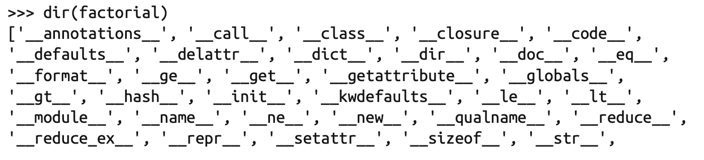

Fluent Python
Owner: Huijie Liu Tags: Ongoing, Study Note
数据结构
序列构成的数组
Python 标准库用 C 实现了丰富的序列类型，列举如下。
- 容器序列 list、tuple 和 collections.deque 这些序列能存放不同类型的数据。
- 扁平序列 str、bytes、bytearray、memoryview 和 array.array，这类序列只能容纳一种类型。
容器序列存放的是它们所包含的任意类型的对象的引用，而扁平序列里存放的是值而不是 引用。换句话说，扁平序列其实是一段连续的内存空间。由此可见扁平序列其实更加紧 凑，但是它里面只能存放诸如字符、字节和数值这种基础类型。
序列类型还能按照能否被修改来分类。
- 可变序列 list、bytearray、array.array、collections.deque 和 memoryview。
- 不可变序列 tuple、str 和 bytes。
字典和集合
如果一个对象是可散列的，那么在这个对象的生命周期中，它的散列值是不变的，而且这个对象需要实现 hash() 方法。另外可散列对象还要有 eq() 方法，这样才能跟其他键做比较。如果两个可散列对象是相等的，那么它们的散列值一定是一样的。一般来讲用户自定义的类型的对象都是可散列的。
文本和字节序列
把函数视作对象
一等函数
在 Python 中，函数是一等对象。编程语言理论家把“**一等对象”**定义为满足下述条件的程 序实体:
- 在运行时创建
- 能赋值给变量或数据结构中的元素
- 能作为参数传给函数
- 能作为函数的返回结果
在 Python 中，整数、字符串和字典都是一等对象。
高阶函数
接受函数为参数，或者把函数作为结果返回的函数是高阶函数。函数式语言通常会提供 map、filter 和 reduce 三个高阶函数。
函数内省
除了 doc，函数对象还有很多属性。使用 dir 函数可以探知所有属性:


调用函数时使用 * 和 **“展开”可迭代对象
函数注解
函数声明中的各个参数可以在 : 之后增加注解表达式。如果参数有默认值，注解放在参数名和 = 号之间。如果想注解返回值，在 ) 和函数声明末尾的 : 之间添加 -> 和一个表达式。 那个表达式可以是任何类型。
函数装饰器和闭包
函数装饰器用于在源码中**“标记”**函数，以某种方式增强函数的行为。
装饰器基础
装饰器是可调用的对象，其参数是另一个函数。装饰器可能会处理被装饰的函数，然后把它返回，或者将其替换成另一个函数或可调用对象。
- 特性1，能把被装饰的函数替换成其他函数。
- 特性2，装饰器在加载模块时立即执行。（被装饰的函数定义之后立即运行）
闭包
闭包指延伸了作用域的函数，能访问定义体之外定义的非全局变量。闭包是一种函数，它会保留定义函数时存在的自由变量的绑定，这样调用函数时， 虽然定义作用域不可用了，但是仍能使用那些绑定。

averager 的闭包延伸到那个函数的作用域之外，包含自由变量 series 的绑定
在 averager 函数中，series 是自由变量，指未在本地作用域中绑定的变量。
nonlocal 声明：它的作用是把变量标记为自由变量， 即使在函数中为变量赋予新值了，也会变成自由变量。
面向对象惯用法
对象引用、可变性和垃圾回收
在**==**和is之间选择
== 运算符比较两个对象的值(对象中保存的数据)，而 is 比较对象的标识（即引用）。
a == b是语法糖，等同于a.eq(b)。继承自object的__eq__ 方法比较两个对象的 ID，结果与 is 一样。但是多数内置类型使用更有意义的方式覆盖了__eq__ 方法，会考虑对象属性的值。
元组的相对不可变性
元组与多数 Python 集合(列表、字典、集，等等)一样，保存的是对象的引用。如果引用的元素是可变的，即便元组本身不可变，元素依然可变。
深复制和浅复制
- 浅复制：即复制了最外层容器，副本中的元素是源容器中元素的引用
- 深复制：即副本不共享内部对象的引用
函数的参数作为引用时
**共享传参：**函数的各个形式参数获得实参中各个引用的副本。也就是说，函数内部的形参是实参的别名。因此，函数可能会修改作为参数传入的可变对象，但是无法修改那些对象的 标识(即不能把一个对象替换成另一个对象)。
del、垃圾回收和弱引用
- 垃圾回收使用的主要算法是引用计数，当引用计数归零时，对象立即就被销毁。
- 弱引用不会增加对象的引用数量。引用的目标对象称为所指对象(referent)。因此弱引用不会妨碍所指对象被当作垃圾回收。